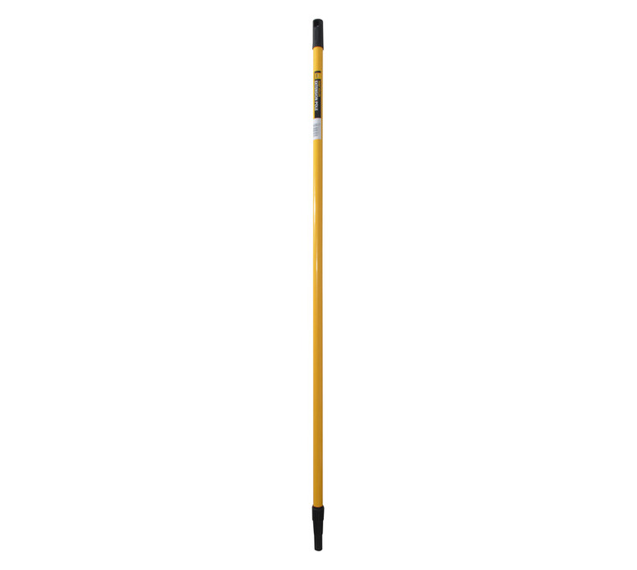
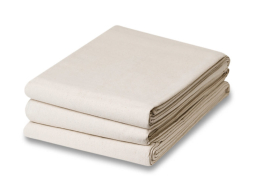

Shop
Accessories and Supplies List
Painted Horizon provides all the essential supplies you need for your arts and crafts projects. From palettes and mixing cups to glue and sealants, our craft supplies ensure that you have everything necessary to complete your projects with ease. We stock only the best materials to help you create beautiful, lasting works of art.
Explore our range of painting accessories designed to enhance your crafting experience. We offer a variety of items, including palette knives, detail sponges, stencil brushes, paint sealers, and storage solutions. These accessories are carefully selected to complement your creative process, making your projects more efficient and enjoyable.

Canvas
.
R40.00

Easel
.
R60.00

Extension pole
.
R35.00

Drop cloth
.
R15.00

One Paint tray
.
R15.00
Usage Tips:
- Paint Extension Poles: Attach to your paint roller to reach high or hard-to-access areas easily. Ideal for large walls or ceilings.
- Canvas: Choose the right canvas size and texture for your project. Stretched canvases are great for painting, while canvas boards are perfect for smaller works.
- Paint Trays: Use for holding and mixing paint. Opt for trays with liners for easy cleanup and those with multiple compartments for different colors.
- Drop Cloths: Protect your workspace by covering floors and furniture. Select durable, washable cloths for repeated use or disposable ones for quick cleanups.
Cleaning:
- Paint Extension Poles: Wipe down with a damp cloth after use. Ensure any paint residue is removed from the handle and attachment areas.
- Canvas: Store in a dry, dust-free place. Avoid exposure to direct sunlight to prevent fading.
- Paint Trays: Rinse thoroughly with warm water and mild soap. For stubborn paint, use a brush to scrub the tray before rinsing.
- Drop Cloths: Wash in cold water with mild detergent. Ensure they are fully dry before storing.